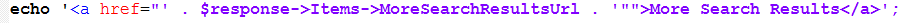
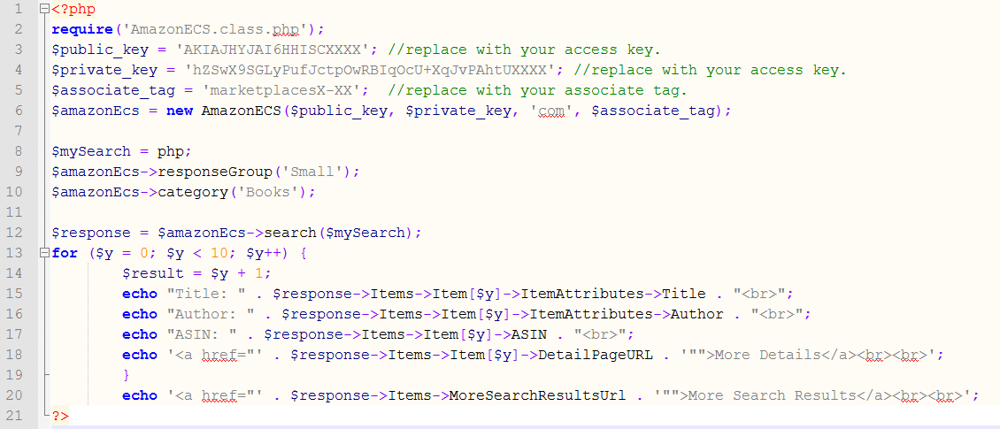

Section 3: Item Search Function
I find this function to be the most useful in this library. You can allow the user to provide a search term and you can use this function to
return the top ten results from Amazon. This is a powerful tool for your website or blog. The product list will always be up to date, because
the Search Function looks the products up each time it is used.
Your Access Keys
Create variables for your access keys:
$public_key = 'Access_Key_ID';
$private_key = ‘Secret_Access_Key ';
$associate_tag = 'Tracking_ID';
//Replace Access_Key_ID, Secret_Access_Key, and Tracking_ID with your actual keys and IDs.
Create the object
We are using the AmazonECS class from the AmazonECS.class.php file. We will create a new AmazonECS object using its _constructor
(Click here for more information on constructors in PHP).
The constructor looks like this:
__construct($accessKey, $secretKey, $country, $associateTag)
The $country parameter will select the Amazon website we want our results from. If we chose ‘co.uk’ we will get results
from Amazon.co.uk. The possible values for $country are de, com, co.uk, ca, fr, co.jp, it, cn, and es. For this guide we
will be using ‘com’ to return results from the USA site Amazon.com. For the other three parameters we will use the variables we created above.
We create an object and name it $amazonECS:
$amazonEcs = new AmazonECS($public_key, $private_key, 'com', $associate_tag);
Setting the Response Group
Amazon has many Response Groups you can choose from. Each group returns different set of information. You can see all of the
Response Groups that are available by clicking this link.
The Small Response Group returns an object that looks like this:

We will use the responseGroup() function from the library to set the Response Group to Small:
$amazonEcs->responseGroup('Small');
Setting the Category
Here are some categories to search on the United States site (Amazon.com) are:
All
Apparel
Appliances
Baby
Beauty
Books
DVD
Fashion
You can see the complete list by going here:
http://docs.aws.amazon.com/AWSECommerceService/latest/DG/LocaleUS.html
For our Book Search website we will be using the Books category. We will use the category() function from the library:
$amazonEcs->category('Books');
Search Function
We will create a variable called $mySearch and set it to the search term we want to use. To search for a php book, we will set $mySearch to php:
$mySearch = php;
We will create a variable called $response to store the return data and set it equal to the search() function:
$response = $amazonEcs->search($mySearch);
Using var_dump
You can use the PHP function var_dump() to view the response data:
var_dump($response);
If you would like to see the data in JSON you can do the following:
echo json_encode($response, 128);
Viewing the Search Results
Using var_dump() is a great way to test your code or debug, but it is not a great way for the user to view their search results. Let’s use a for loop to print them:
for ($y = 0; $y < 10; $y++) {
$result = $y + 1;
echo "Title: " . $response->Items->Item[$y]->ItemAttributes->Title . "
";
echo "Author: " . $response->Items->Item[$y]->ItemAttributes->Author . "
";
echo "ASIN: " . $response->Items->Item[$y]->ASIN . "
";
}
Let’s also show the MoreSearchResultsUrl, so the user can view all of the results on the Amazon.com website:

Here is all of our code put together from this section
